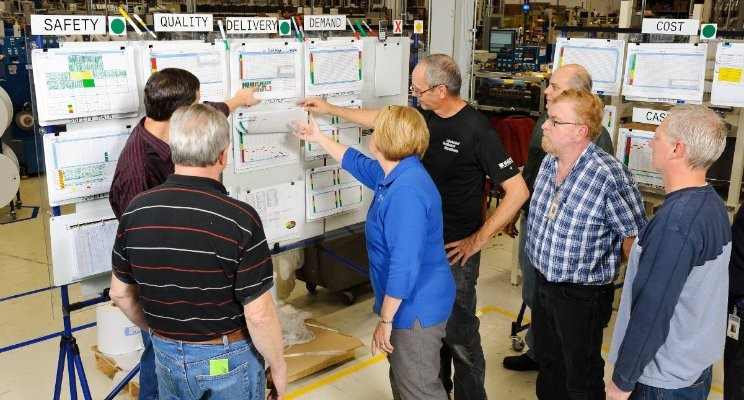

2 El análisis de datos de producción en el entorno industrial.

Al terminar este capítulo, el alumno debe ser capaz de:
- Explicar qué es el método científico y por qué es la base del trabajo técnico riguroso en la industria.
- Describir el concepto de variabilidad y distinguir entre variación normal y variación que indica un problema real en un proceso.
- Enunciar los tres principios del pensamiento estadístico y aplicarlos al análisis de situaciones industriales concretas.
- Identificar y diferenciar los tres tipos de estudio según el origen de los datos —retrospectivo, observacional y experimental— y reconocer las ventajas y limitaciones de cada uno.
- Valorar la calidad de los datos como condición previa a cualquier análisis, y reconocer las principales fuentes de error en los datos históricos.
Los conceptos clave introducidos en este capítulo son: variabilidad, pensamiento estadístico, método científico, ciclo PDCA, datos estructurados y no estructurados, estudio retrospectivo, estudio observacional, experimento diseñado, y calidad de los datos.
2.1 El método científico y la variabilidad
En el trabajo industrial, los problemas rara vez tienen una causa única ni una solución inmediata. La forma más eficaz de abordarlos es mediante el método científico: observar lo que está ocurriendo, formular una hipótesis sobre sus causas, diseñar pruebas para verificarla, analizar los resultados y extraer conclusiones. Este ciclo —observación, hipótesis, experimentación, conclusión— no es exclusivo de la investigación académica; es el fundamento del trabajo técnico riguroso en cualquier industria.
Lo que hace útil al método científico en el entorno industrial es que obliga a basar las decisiones en datos reales y no en intuiciones o en la experiencia acumulada de forma no sistemática. La experiencia es valiosa, pero puede engañar: un proceso que “siempre ha funcionado así” puede estar ocultando problemas que solo se hacen visibles cuando se analizan los datos con rigor.
El concepto central que conecta el método científico con el análisis de datos industriales es la variabilidad. En cualquier proceso industrial, las sucesivas observaciones de una misma variable no dan exactamente el mismo resultado: el peso de una pieza varía ligeramente de una unidad a otra, el pH de una cuba no es idéntico en cada fabricación, el rendimiento quesero fluctúa de un día a otro. Esta variación no es un fallo ni una anomalía: es inherente a cualquier proceso real. Lo importante es saber distinguir cuándo la variación es normal —es decir, atribuible a causas comunes y aleatorias— y cuándo indica un problema real que requiere intervención.
El objetivo principal de la mejora industrial es la reducción de la variabilidad.
La estadística proporciona las herramientas para analizar esa variabilidad: identificar sus fuentes, cuantificar su magnitud, determinar qué factores tienen mayor impacto y decidir sobre cuáles actuar. Pero las herramientas estadísticas solo tienen sentido dentro de un contexto: los datos son números dentro de un proceso, y para interpretarlos correctamente es imprescindible el conocimiento tecnológico de ese proceso. En un análisis de la producción de un queso, los valores de pH, temperatura o humedad significan poco sin comprender cómo interactúan en la fabricación; la estadística describe, pero es el conocimiento del proceso el que explica.
2.2 El pensamiento estadístico como filosofía de trabajo
El pensamiento estadístico va más allá del uso de herramientas concretas: es una forma de entender y abordar los procesos industriales. Se apoya en tres principios fundamentales:
- Todo proceso industrial está compuesto por procesos interconectados.
- La variabilidad existe y es inherente a esos procesos.
- Entender y reducir la variabilidad es la clave de la mejora y el éxito.
Aplicar estos principios en el trabajo diario significa tomar decisiones basadas en datos en lugar de en suposiciones, cuantificar la incertidumbre en lugar de ignorarla, y comunicar los resultados de forma clara y fundamentada. No se trata de aplicar fórmulas mecánicamente, sino de desarrollar un juicio analítico que permita distinguir lo relevante de lo accesorio, y la causa real del efecto aparente.
En la práctica, el pensamiento estadístico se materializa en ciclos de mejora continua: cada análisis genera conocimiento sobre el proceso, ese conocimiento orienta las acciones de mejora, y los resultados de esas acciones se convierten en nuevos datos que realimentan el ciclo. Las metodologías más extendidas en la industria alimentaria —Lean Manufacturing, Six Sigma— están construidas sobre este principio: la mejora no es un evento puntual sino un proceso continuo de aprendizaje organizacional basado en evidencia.
En el entorno industrial, el pensamiento estadístico es esencial para:
Tomar decisiones basadas en datos, evitando conclusiones basadas en intuiciones o suposiciones.
Evaluar riesgos, cuantificando la incertidumbre y permitiendo tomar decisiones que los minimicen.
Mejorar el conocimiento de los procesos para una toma de decisiones más eficaz.
Comunicar resultados de manera clara, precisa y verificable.
2.3 Los datos industriales
En el entorno industrial los datos pueden clasificarse atendiendo a dos criterios: su estructura y su origen.
Clasificación según la estructura
Datos estructurados son los organizados en un formato definido —tablas, hojas de cálculo, archivos CSV— que facilita su análisis y consulta. Son los más habituales en el control de producción: lecturas de sensores, registros de fabricación, datos de control de calidad, información de inventario.
Datos no estructurados no tienen un formato predefinido: textos, imágenes, audio, vídeo. Su análisis requiere técnicas más avanzadas, como el procesamiento de lenguaje natural o la visión artificial. En el entorno industrial aparecen como registros de mantenimiento, informes de incidentes, imágenes de inspección visual o grabaciones de maquinaria.
Datos semiestructurados tienen cierta organización pero con mayor flexibilidad que los estructurados. Los archivos XML o JSON y los registros de eventos son ejemplos habituales.
En el contexto de la Industria 4.0, la cantidad y variedad de datos industriales crece de forma exponencial, con una incorporación creciente de datos no estructurados procedentes de sensores, cámaras y sistemas conectados.
Clasificación según el origen
La forma en que se obtienen los datos determina en gran medida qué tipo de conclusiones pueden extraerse de ellos. Esta distinción es fundamental para interpretar correctamente cualquier análisis.
Estudios retrospectivos o históricos
Un estudio retrospectivo utiliza datos recogidos en el pasado durante un período determinado. Su objetivo puede ser investigar relaciones entre variables, explorar la calidad de la información disponible, construir un modelo que describa el proceso tal como es actualmente, o detectar si el proceso se ha desviado de su comportamiento habitual. Los modelos construidos a partir de datos históricos se denominan modelos empíricos, porque se basan en los propios datos del proceso y no en una formulación teórica.
La principal ventaja de los estudios retrospectivos es la disponibilidad inmediata de una gran cantidad de datos ya recogidos. Sin embargo, presentan limitaciones importantes que conviene tener presentes:
- Puede ser imposible determinar si las condiciones en que se obtuvieron los datos históricos son comparables con la situación actual del proceso.
- Es frecuente que falten variables clave que no se recogieron en su momento, o que se recogieran de forma defectuosa.
- La fiabilidad y validez de los datos históricos no siempre puede verificarse, especialmente si provienen de fuentes diversas o de períodos con procedimientos de registro diferentes.
- Las notas explicativas sobre valores anómalos suelen ser insuficientes o inexistentes, y los recuerdos de quienes participaron en esos procesos se pierden o distorsionan con el tiempo.
- Los datos históricos se recogieron con una finalidad determinada, y pueden no ser adecuados para los objetivos del análisis actual.
Por estas razones, los estudios retrospectivos suelen requerir una fase previa de preparación y depuración de datos que puede ser larga y laboriosa. Se estima que en muchos proyectos de análisis de datos, esta fase puede ocupar hasta el 60 % del tiempo total. Las herramientas de análisis son de gran ayuda en esta fase, aunque en muchas ocasiones será necesario un trabajo manual de recolección a partir de papel, hojas de cálculo diversas y otras fuentes. Este trabajo, aunque tedioso, tiene un valor añadido: mejora el conocimiento de cómo se originan y almacenan los datos del proceso, lo que siempre es útil para mejorar los procedimientos de captura futuros.
Estudios observacionales
Un estudio observacional observa el proceso durante un período de operación en condiciones normales de rutina, interfiriendo lo mínimo posible en él. El objetivo es recoger información relevante sin alterar el proceso, lo que proporciona datos que reflejan fielmente las condiciones reales de trabajo.
Si se planifican con cuidado, los estudios observacionales ofrecen datos fiables, precisos y completos para documentar un proceso. Su limitación principal es que el rango de variación de las variables observadas durante el período de estudio puede no cubrir todas las situaciones posibles —en particular, las condiciones extraordinarias o los valores extremos—, lo que restringe las conclusiones que pueden extraerse sobre las relaciones entre variables.
Experimentos diseñados
Los experimentos diseñados son la forma más rigurosa de obtener información sobre un proceso. En ellos, el técnico o ingeniero introduce cambios deliberados en las variables que controla —denominadas factores— observa el resultado y determina qué variables son responsables de los cambios observados.
La diferencia fundamental respecto a los estudios históricos y observacionales es que en los experimentos diseñados las combinaciones de factores se aplican de forma aleatoria sobre las unidades experimentales. Esta aleatorización es lo que permite establecer con precisión las relaciones de causa y efecto, algo que no es posible con los otros dos tipos de estudio, donde las variables no están bajo el control del analista.
Los experimentos diseñados requieren más planificación y recursos que los estudios retrospectivos u observacionales, pero proporcionan conclusiones mucho más sólidas y directamente accionables para la mejora del proceso.
2.4 La calidad de los datos como condición previa al análisis
El ciclo de mejora continua descrito en la sección anterior —conocido en la industria como ciclo PDCA (Plan-Do-Check-Act o Planificar-Hacer-Verificar-Actuar), también llamado ciclo de Deming— está en la base de las metodologías de mejora más extendidas en el sector alimentario, desde la gestión de la calidad ISO hasta el Six Sigma o el Lean Manufacturing. Su lógica es simple: planificar una acción de mejora, ejecutarla, verificar sus resultados mediante datos, y actuar en consecuencia para consolidar la mejora o reiniciar el ciclo. Los datos son el elemento que hace funcionar este ciclo: sin datos fiables, no hay verificación posible, y sin verificación el ciclo se rompe.
Esto conduce a una condición previa que con frecuencia se subestima: la calidad de los datos. Un análisis es tan bueno como los datos en que se basa. Datos incorrectos, incompletos o mal recogidos producen conclusiones incorrectas, independientemente de la sofisticación del método estadístico utilizado. En el ámbito anglosajón de la ciencia de datos esto se resume con la expresión garbage in, garbage out —basura entra, basura sale—, que describe con precisión el problema: ninguna herramienta de análisis, por potente que sea, puede compensar la mala calidad de los datos de partida.
La calidad del análisis depende directamente de la calidad de los datos. Antes de analizar, conviene siempre verificar que los datos son fiables, completos y pertinentes para el objetivo del estudio.
Esta advertencia es especialmente relevante en el trabajo con datos históricos, como se ha visto en la sección anterior, pero se aplica a cualquier tipo de estudio. Por esa razón, la organización, la depuración y la verificación de los datos antes del análisis es un paso metodológico imprescindible, y no un trámite previo que pueda obviarse. El capítulo 4 desarrolla con detalle los principios y herramientas para organizar correctamente los datos antes de analizarlos.
2.5 Resumen del capítulo
Este capítulo ha presentado los fundamentos conceptuales del análisis de datos en el entorno industrial. El punto de partida es el método científico: una forma sistemática de resolver problemas que obliga a basar las decisiones en datos y no en intuiciones. El concepto central que articula todo el capítulo es la variabilidad: todo proceso industrial varía, y el objetivo de la mejora es entender y reducir esa variación.
El pensamiento estadístico es la filosofía de trabajo que integra estos principios en el día a día industrial. Se materializa en el ciclo PDCA —planificar, hacer, verificar, actuar—, que es la base de las metodologías de mejora continua más extendidas en el sector alimentario.
Los datos industriales pueden clasificarse por su estructura —estructurados, no estructurados y semiestructurados— y por su origen. Esta segunda clasificación es especialmente relevante para el análisis: los estudios retrospectivos trabajan con datos históricos y ofrecen abundancia de información pero con limitaciones de fiabilidad; los estudios observacionales recogen datos en condiciones reales de operación sin intervenir en el proceso; y los experimentos diseñados son la forma más rigurosa de establecer relaciones de causa y efecto, al introducir cambios controlados y aleatorizar las condiciones.
Finalmente, cualquier análisis parte de una condición previa ineludible: la calidad de los datos. Datos incorrectos o incompletos producen conclusiones incorrectas independientemente del método utilizado. La organización y depuración de los datos antes del análisis, que se desarrolla en el capítulo 4, es un paso metodológico tan importante como el análisis mismo.